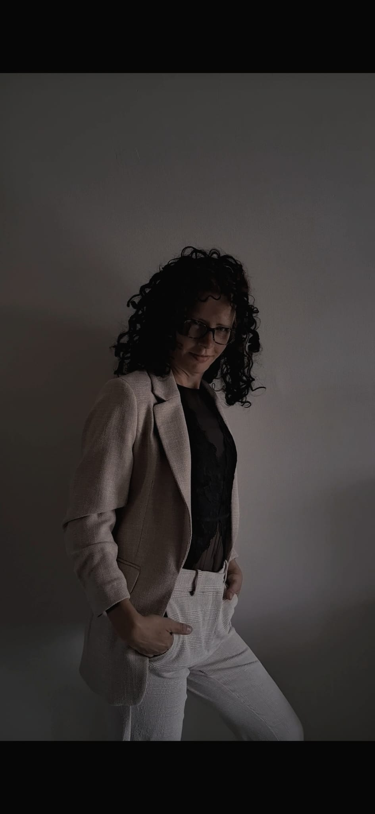

Strategisch Inzicht & Rendement
Het hoogste rendement is een zuiver fundament. Ik saneer de blauwdruk van je lifestyle, gezin en imperium.

De Vrouw achter De Architect
Toegang tot de Audits & Resets Welkom. Ik ben Tamara Esseveld, en ik ben hier om de praatsessies over te slaan. Als je op deze pagina bent beland, loop je ergens vast. In je eigen energie, in je gezin, of in de groei van je bedrijf. Je hebt waarschijnlijk al van alles geprobeerd met je verstand, maar de echte verandering blijft uit. Dat komt omdat de blokkade niet in je hoofd zit, maar in de onderstroom van je zenuwstelsel of je organisatie. Wat ik doe: Mijn methode is vlijmscherp en duurt slechts minuten. Waar psychologen of businessconsultants maandenlang met je willen praten, sla ik de ruis over. Ik scan direct de energetische blauwdruk van jou, je gezin of je business. Ik leg bloot wat de stagnatie veroorzaakt en voer ter plekke een harde reset uit in de onderlaag. Of het nu gaat om een snelle Personal Flash Scan of een intensieve 3-daagse Systeem Reset: je krijgt de rauwe data en een direct herstel van je fundament. Wil je een plek in de agenda claimen? Ik werk uitszant met mensen die klaar zijn voor directe transformatie. De directe verkoop is gesloten. Stuur een e-mail naar [tamara.esseveld@live.nl] met als onderwerp 'AANVRAAG [NAAM DIENST]'. Geef kort aan voor wie de aanvraag is, waar je nu het hardst vastloopt en of je klaar bent om het praten achter je te laten. Binnen 48 uur hoor je of je wordt toegelaten tot de exclusieve wachtlijst voor de komende maand.
Klaar voor de belichaming van jouw succes?
Particulieren & Gezinnen
Voor het individu of het gezin dat vastloopt in hardnekkige dynamieken ien direct de absolute kernoorzaak boven tafel wil krijgen. Zit je vast op een specifiek punt in je werk, relatie, gezondheid of gezinsleven? Of blijft een specifieke connectie (zoals een soulmate of tweelingziel) je systeem domineren? Ik plug binnen 5 minutes rechtstreeks in op jouw persoonlijke blauwdruk of gezinssysteem. Mijn zenuwstelsel lokaliseert exact waar de energie lekt of stagneert. Binnen één gerichte sessie leggen we de wortel van de ruis bloot én krijg je de exacte sleutel tot herstel en neutraliteit. Inclusief een vlijmscherpe Personal Baseline Audit naar jouw actuele belastbaarheid en chakra-blokkades.
Resultaat: Directe helderheid, herwonnen regie en de exacte blauwdruk om je persoonlijke frequentie structureel te verhogen.
Een intensieve interventie gericht op de volledige sanering van je zenuwstelsel, patronen en hardware. We stoppen met pleisters plakken en verwijderen de opgebouwde ruis van jarenlange stress, overprikkeling of diepe verstrikkingen om je vitale energie te herstellen. Dit krachtige transformatietraject wordt volledig afgestemd op de benodigde diepte: • Basis Reset: 3 dagen diepe energetische sanering en uitlijning van je fundament (€222) • Expansion Reset: 3 days reset inclusief onbeperkt contact voor directe integratie (€333) • Elite VIP Reset: *5 dagen intensieve begeleiding, maximale opschoning en directe herkalibratie (€555) • Volledige Blauwdruk-Reset: Een intensief 3-maanden meesterschapstraject (12 weken) om diepgewortelde structuren definitief af te breken en te leren regeren vanuit de pure 144-frequentie (Prijs op aanvraag). *Als premium bonus wordt bij deze reset tevens een Energetische Huisreiniging op afstand uitgevoerd, zodat je leefomgeving transformeert in een zuiver en harmonieus oplaadpunt.
Voor wie doorlopend een consistent gekoppeld wil blijven aan het zuivere fundament. Geen eenmalige interventie, maar een strategisch energetisch abonnement om ruis direct te tackelen zodra het ontstaat. Beschikbaar in de volgende abonnementsvormen:
Heb je behoefte aan directe, vlijmscherpe data op één specifieke vraag of blokkade, zonder dat je direct een langdurig traject instapt? Met The 3-Card Blueprint Scan plug ik binnen 5 minuten rechtstreeks in op jouw energetische veld. Ik schud drie tarotkaarten en scan niet alleen de symboliek van de kaarten, maar lees simultaan de onderstroom en de energetische blauwdruk van jouw systeem uit. Geen eindeloze praatsessies of vage adviezen, maar een gerichte, driedimensionale doorlichting. We leggen de rauwe blauwdruk bloot: wat blokkeert je nu echt, en wat is de enige logische, zuivere stap die jouw systeem moet zetten voor directe herijking? Je hoeft hier niets voor te doen en je hoeft er niet live voor klaar te zitten. Ik doe de scan op afstand in het energetische veld en stuur de vlijmscherpe data direct naar je mail, zodat je het direct kunt integreren.
Bedrijven & Multinationals
De ultrasnelle energetische doorlichting voor managementteams, directies, afdelingen of bedrijfsculturen. Als directeur of manager zie je vaak de symptomen: targets worden net niet gehaald, de communicatie stroopt, of er hangt een onverklaarbare tension op de werkvloer. Waar traditionele consultants maanden over doen, lees ik de operationele onderstroom van jouw organisatie binnen enkele minuten uit. Ik lokaliseer exact waar communicatie lekt, waar angst de innovatie blokkeert en welke sleutelfiguren niet op de juiste positie staan. Je krijgt direct een glasheldere, feitelijke diagnose van what er achter de schermen écht speelt. Let op: Deze Quickscan is de verplichte nulmeting voorafgaand aan grotere zakelijke trajecten.
Voor wie: ondernemers en leiders die hun organisatie structureel willen laten draaien en opschalen. Drie vormen, afhankelijk van je doel:
Neem direct contact op voor een kennismaking of lichtscan.
Stuur een E-mailOf schrijf je in voor de nieuwsbrief